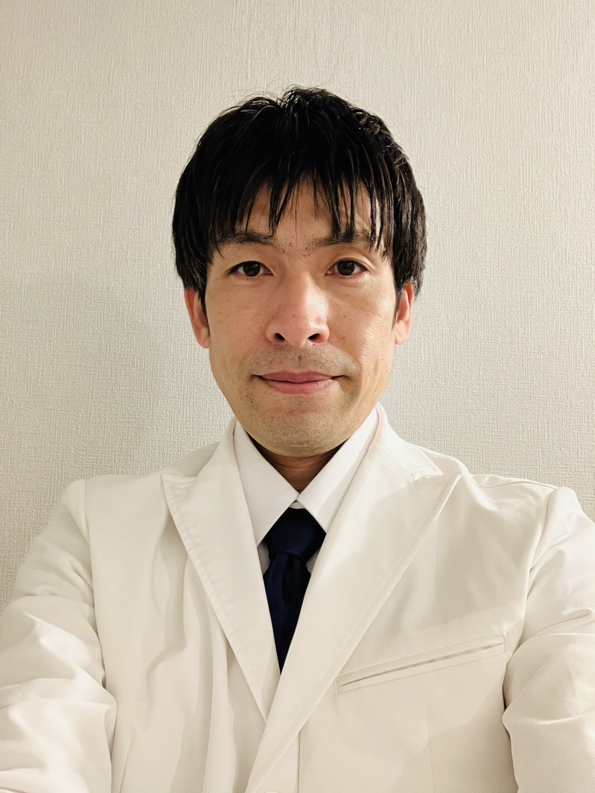

あめのみづ 中山翔平

鍼灸治療の考え方に関しては、どちらかといえば東洋医学的・内科的な鍼灸師だと思います。
鍼灸はもちろん、漢方薬、温泉、食事、運動療法なども活用することで
ホルモンや神経系統、臓器レベルの変化に重きをおいています。
特に血液検査など、臨床検査数値を分析し、東洋医学の証と照らし合わせることで
その人ひとりひとりの身体の性質に沿った数値変化を重視しています。
また最近はエピジェネティクスなどのゲノム学や、細胞膜の特性、腸内細菌の多様性などの視点から、伝統医学の理論を再考しています。
私生活では、世界中の美術や音楽・サッカーが好きです。
ギターも弾きます。フットサルもプレーします。
これからの医術・医学が、人ばかりでなく 動物や植物、微生物など、全ての生き物を豊かにしていく治療法に進化していくことを願いながら 日々研鑽を積んでいっています。
ちなみに施術をしていないときは、明治神宮近くの薬局で市販薬を売っています。
免許・資格等： 鍼灸師（国家資格）、医薬品登録販売者、温泉保養士上級、リラクゼーションセラピスト１級、その他保有

最近のこと 2024/07/20
鉄鍋で料理することの魅力に気付いてきました。